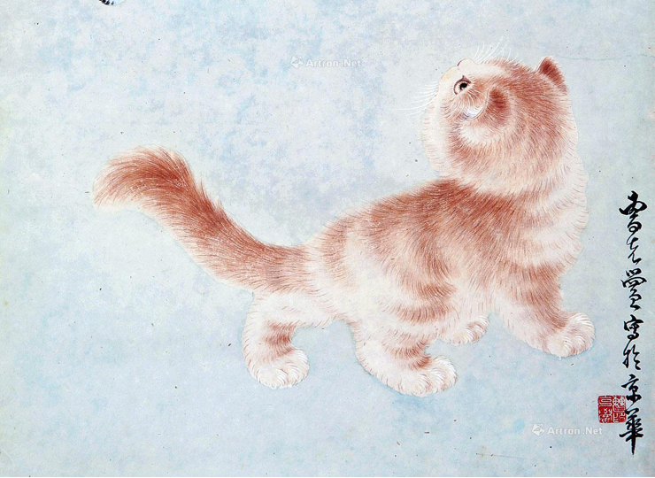

126
找到结果
-

苏绣
DO 标识码 37232519870103004383类别 表演艺术 - 传统戏剧/曲艺苏绣是中国优秀的民族传统工艺之一，是苏州地区刺绣产品的总称，其发源地在苏州吴县一带，现已遍衍无锡、常州等地。刺绣与养蚕，缫丝分不开，又称丝绣... -
丁奎志
UNESCO认证 苏绣DO 标识码 37232519870103004383苏绣是中国优秀的民族传统工艺之一，是苏州地区刺绣产品的总称，其发源地在苏州吴县一带，现已遍衍无锡、常州等地。刺绣与养蚕，缫丝分不开，又称丝绣... -

小猫戏蝶
 姚慧芬
苏绣
苏绣是中国优秀的民族传统工艺之一，是苏州地区刺绣产品的总称，其发源地在苏州吴县一带，现已遍衍无锡、常州等地。刺绣与养蚕，缫丝分不开，又称丝绣...
姚慧芬
苏绣
苏绣是中国优秀的民族传统工艺之一，是苏州地区刺绣产品的总称，其发源地在苏州吴县一带，现已遍衍无锡、常州等地。刺绣与养蚕，缫丝分不开，又称丝绣...